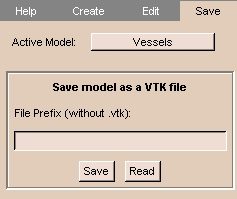

After you create a model, you can save the model.
To save the model:
- On the Main menu, click ModelMaker.

The ModelMaker panel appears.
- Click the Save tab. The Save tab appears.

- Select the Active Model.
- Enter the File Prefix, which can include a path.
(The file suffix is
.vtk.)
- Click Save.
The Save Model dialog box appears.
- Select the path and click Save.